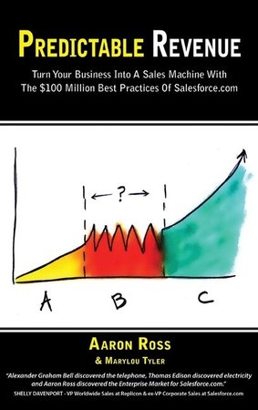

About the book

Predictable Revenue by Aaron Ross and Marylou Tyler, first published in 2011, describes how a sales team at Salesforce.com built a repeatable way of generating new business. It became one of the most influential sales books of the last fifteen years, especially among software companies. This review, rewritten in our own words from an earlier summary on this site, explains the book's main ideas, where they apply outside software, and what has changed since it was written. It is a review, not a substitute for reading the book.
The core idea: specialize the sales roles
The book's central argument is that one salesperson should not be expected to find prospects, qualify them, close deals and look after customers. Each of those jobs needs different skills and gets crowded out by the others, usually with prospecting losing first. Splitting them into specialized roles makes each step measurable and the whole pipeline more predictable.
Other key ideas
- Outbound prospecting without cold calling. The book popularized short, targeted emails to senior people asking who in their organization handles a specific issue, followed by a conversation, in place of unannounced calls.
- Three kinds of lead generation. The authors distinguish broad inbound marketing, referrals and community; targeted outbound prospecting; and one-to-many campaigns, and argue that a predictable pipeline needs targeted outbound work alongside the other two.
- A pipeline you can calculate. When each role has clear inputs and conversion rates, you can estimate how many prospects you need to hit a revenue target, and see quickly which step is failing.
- The ideal customer profile. Focusing on companies most likely to buy and succeed makes outreach efficient and keeps customers longer.
Does it apply to a small business outside software?
A small engineering firm, distributor or manufacturer rarely has enough people for five separate sales roles. The underlying lessons still transfer well:
| Lesson | How to apply it with a small team |
|---|---|
| 1. Separate prospecting from closing | Even with one or two salespeople, block fixed time for prospecting so it is not squeezed out by closing work |
| 2. Define your ideal customer | Industry, size, location, trigger events; write it down and use it to choose targets |
| 3. Send short, specific outreach | A brief message to the right role asking who handles a specific problem, not a long pitch |
| 4. Measure the pipeline in numbers | New conversations, qualified opportunities, proposals and wins per month; work backward from the revenue target |
| 5. Hand over and follow through | Clear criteria for passing a lead on; customer success owns retention and growth after the sale |
A worked pipeline calculation
A firm wants 12 new customers a year. From its own records, it wins 1 in 3 proposals, sends a proposal to 1 in 2 qualified opportunities, and finds 1 qualified opportunity in every 5 first conversations. Working backward: 12 wins need 36 proposals, 72 qualified opportunities and about 360 first conversations a year, or roughly 7 a week. That single number, seven first conversations a week, is easier to manage than a revenue target and shows immediately when prospecting is slipping. The figures are illustrative; use your own conversion rates.
What has changed since the book
- Inboxes are crowded. The email approach the book made famous has been copied by many, and automated sequences have made recipients and spam filters much less forgiving. Relevance and personal research matter more than volume.
- Privacy and anti-spam rules. In Canada, commercial email is governed by Canada's anti-spam legislation (CASL), which requires consent with limited exceptions. Check how it applies before any outbound email campaign.
- AI tools. Research, drafting and follow-up are now much faster with AI, which makes the book's emphasis on specific, well-targeted outreach more important, not less.
- Customer success is mainstream. The book's point that retention and growth deserve their own role has become standard practice in subscription businesses.
Our verdict
Predictable Revenue is worth reading for any owner who depends on one or two people to both find and close business. The specific tactics have aged, but the discipline of separating prospecting from closing, defining the ideal customer and running the pipeline by numbers remains the most useful idea in it.